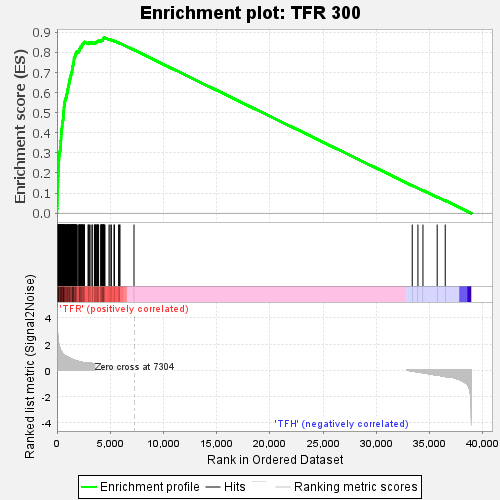
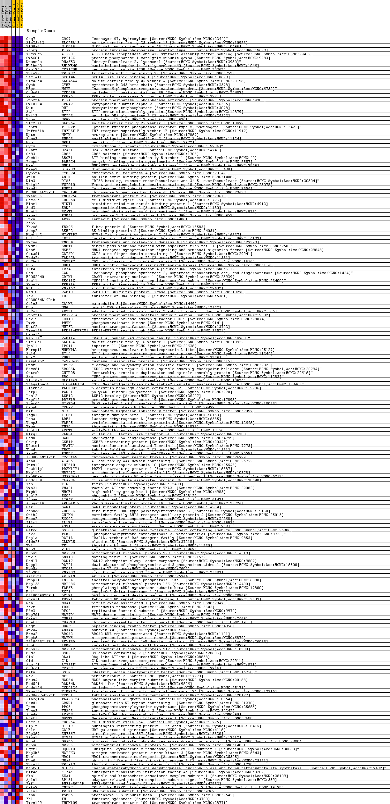
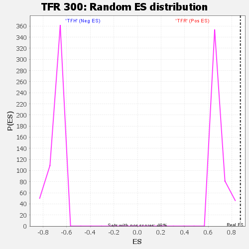

| | | Dataset | Fox_f_tfrvstreg_f_tfrvstreg.tfr_vs_tfh_cls.cls#TFR_versus_TFH |
| Phenotype | tfr_vs_tfh_cls.cls#TFR_versus_TFH |
| Upregulated in class | TFR |
| GeneSet | TFR 300 |
| Enrichment Score (ES) | 0.87276524 |
| Normalized Enrichment Score (NES) | 1.2477534 |
| Nominal p-value | 0.0 |
| FDR q-value | 0.04842103 |
| FWER p-Value | 0.046 |
Table: GSEA Results Summary

Fig 1: Enrichment plot: TFR 300
Profile of the Running ES Score & Positions of GeneSet Members on the Rank Ordered List
| SYMBOL | TITLE | RANK IN GENE LIST | RANK METRIC SCORE | RUNNING ES | CORE ENRICHMENT | | 1 | Coq7 | na | 7 | 4.320 | 0.0210 | Yes |
| 2 | Slc25a13 | na | 21 | 3.454 | 0.0377 | Yes |
| 3 | S100a6 | na | 40 | 2.921 | 0.0515 | Yes |
| 4 | Ptprj | na | 57 | 2.736 | 0.0645 | Yes |
| 5 | Xrcc6bp1 | na | 59 | 2.727 | 0.0779 | Yes |
| 6 | Gm5601 | na | 60 | 2.727 | 0.0913 | Yes |
| 7 | Dnase2a | na | 64 | 2.698 | 0.1045 | Yes |
| 8 | Bhlhe40 | na | 73 | 2.586 | 0.1170 | Yes |
| 9 | Cep170b | na | 76 | 2.557 | 0.1295 | Yes |
| 10 | Trim37 | na | 93 | 2.390 | 0.1408 | Yes |
| 11 | Sec14l1 | na | 98 | 2.361 | 0.1523 | Yes |
| 12 | Slc45a4 | na | 106 | 2.279 | 0.1633 | Yes |
| 13 | Cybb | na | 113 | 2.237 | 0.1741 | Yes |
| 14 | M6pr | na | 115 | 2.217 | 0.1850 | Yes |
| 15 | Ccdc69 | na | 134 | 2.112 | 0.1949 | Yes |
| 16 | Fkbp5 | na | 135 | 2.094 | 0.2052 | Yes |
| 17 | Ppp2r4 | na | 155 | 2.034 | 0.2147 | Yes |
| 18 | Gm10184 | na | 158 | 2.027 | 0.2246 | Yes |
| 19 | Dut | na | 159 | 2.019 | 0.2345 | Yes |
| 20 | Stil | na | 167 | 1.983 | 0.2440 | Yes |
| 21 | Neil3 | na | 170 | 1.967 | 0.2536 | Yes |
| 22 | Srgn | na | 172 | 1.960 | 0.2632 | Yes |
| 23 | Slc25a1 | na | 189 | 1.896 | 0.2721 | Yes |
| 24 | Ptprv | na | 194 | 1.884 | 0.2813 | Yes |
| 25 | Tnfrsf1b | na | 211 | 1.831 | 0.2898 | Yes |
| 26 | Nptn | na | 227 | 1.788 | 0.2982 | Yes |
| 27 | Sumo3 | na | 244 | 1.742 | 0.3064 | Yes |
| 28 | Nrn1 | na | 291 | 1.616 | 0.3131 | Yes |
| 29 | Cycs | na | 305 | 1.593 | 0.3206 | Yes |
| 30 | H2afz | na | 326 | 1.545 | 0.3277 | Yes |
| 31 | Cd83 | na | 338 | 1.524 | 0.3349 | Yes |
| 32 | Abcb1a | na | 343 | 1.519 | 0.3422 | Yes |
| 33 | Pabpc4 | na | 344 | 1.509 | 0.3496 | Yes |
| 34 | Nme1 | na | 347 | 1.507 | 0.3570 | Yes |
| 35 | Diap3 | na | 363 | 1.492 | 0.3639 | Yes |
| 36 | Cyb5r4 | na | 378 | 1.466 | 0.3708 | Yes |
| 37 | Anln | na | 381 | 1.462 | 0.3779 | Yes |
| 38 | Dis3 | na | 389 | 1.449 | 0.3848 | Yes |
| 39 | Vsig10 | na | 390 | 1.449 | 0.3919 | Yes |
| 40 | Psmd1 | na | 410 | 1.410 | 0.3984 | Yes |
| 41 | D030056L22Rik | na | 420 | 1.395 | 0.4050 | Yes |
| 42 | Tmem256 | na | 429 | 1.385 | 0.4116 | Yes |
| 43 | Cdc25b | na | 434 | 1.383 | 0.4183 | Yes |
| 44 | Hint1 | na | 466 | 1.351 | 0.4241 | Yes |
| 45 | Sod2 | na | 472 | 1.345 | 0.4306 | Yes |
| 46 | Bcat1 | na | 487 | 1.322 | 0.4367 | Yes |
| 47 | Psma1 | na | 490 | 1.320 | 0.4431 | Yes |
| 48 | Lpxn | na | 497 | 1.312 | 0.4494 | Yes |
| 49 | Zfp52 | na | 529 | 1.277 | 0.4549 | Yes |
| 50 | Fbxo6 | na | 538 | 1.269 | 0.4609 | Yes |
| 51 | Aebp2 | na | 572 | 1.240 | 0.4662 | Yes |
| 52 | Htatip2 | na | 578 | 1.235 | 0.4721 | Yes |
| 53 | Hn1l | na | 587 | 1.223 | 0.4779 | Yes |
| 54 | Tmco4 | na | 594 | 1.217 | 0.4837 | Yes |
| 55 | Smdt1 | na | 595 | 1.215 | 0.4897 | Yes |
| 56 | Nsmf | na | 601 | 1.210 | 0.4955 | Yes |
| 57 | Gatad1 | na | 612 | 1.202 | 0.5011 | Yes |
| 58 | Tada2a | na | 633 | 1.189 | 0.5064 | Yes |
| 59 | Cd2bp2 | na | 642 | 1.184 | 0.5121 | Yes |
| 60 | Bub1 | na | 650 | 1.176 | 0.5176 | Yes |
| 61 | Irf4 | na | 654 | 1.174 | 0.5233 | Yes |
| 62 | Cad | na | 655 | 1.173 | 0.5291 | Yes |
| 63 | BC052040 | na | 688 | 1.148 | 0.5339 | Yes |
| 64 | Sec11c | na | 697 | 1.142 | 0.5393 | Yes |
| 65 | Fkbp1a | na | 711 | 1.135 | 0.5445 | Yes |
| 66 | Rnf157 | na | 720 | 1.127 | 0.5499 | Yes |
| 67 | Rad18 | na | 738 | 1.118 | 0.5549 | Yes |
| 68 | Id2 | na | 753 | 1.111 | 0.5600 | Yes |
| 69 | C030034L19Rik | na | 769 | 1.101 | 0.5650 | Yes |
| 70 | Calm3 | na | 796 | 1.087 | 0.5697 | Yes |
| 71 | Ung | na | 834 | 1.065 | 0.5740 | Yes |
| 72 | Ap2s1 | na | 887 | 1.048 | 0.5778 | Yes |
| 73 | Ppp2r1a | na | 890 | 1.047 | 0.5829 | Yes |
| 74 | Cox19 | na | 914 | 1.034 | 0.5873 | Yes |
| 75 | Pmvk | na | 923 | 1.029 | 0.5922 | Yes |
| 76 | Nutf2 | na | 944 | 1.020 | 0.5967 | Yes |
| 77 | Tmem189 | na | 958 | 1.015 | 0.6013 | Yes |
| 78 | Hspa14_1 | na | 999 | 0.997 | 0.6052 | Yes |
| 79 | Rab11a | na | 1013 | 0.991 | 0.6097 | Yes |
| 80 | Slc16a1 | na | 1019 | 0.990 | 0.6144 | Yes |
| 81 | Ipo11 | na | 1033 | 0.985 | 0.6189 | Yes |
| 82 | Hnrnpll | na | 1034 | 0.984 | 0.6238 | Yes |
| 83 | St14 | na | 1053 | 0.976 | 0.6281 | Yes |
| 84 | Egr2 | na | 1067 | 0.973 | 0.6325 | Yes |
| 85 | Casp8ap2 | na | 1097 | 0.960 | 0.6365 | Yes |
| 86 | Cpsf2 | na | 1117 | 0.948 | 0.6407 | Yes |
| 87 | Ercc6l | na | 1130 | 0.944 | 0.6450 | Yes |
| 88 | Cntrob | na | 1133 | 0.944 | 0.6496 | Yes |
| 89 | Src | na | 1153 | 0.936 | 0.6537 | Yes |
| 90 | Slc16a3 | na | 1188 | 0.920 | 0.6573 | Yes |
| 91 | St6galnac4 | na | 1206 | 0.914 | 0.6614 | Yes |
| 92 | Plekhb2 | na | 1210 | 0.912 | 0.6658 | Yes |
| 93 | Parp1 | na | 1214 | 0.912 | 0.6702 | Yes |
| 94 | Lsm12 | na | 1257 | 0.896 | 0.6735 | Yes |
| 95 | Prpf19 | na | 1281 | 0.886 | 0.6772 | Yes |
| 96 | Stard4 | na | 1299 | 0.880 | 0.6811 | Yes |
| 97 | Cenpk | na | 1302 | 0.879 | 0.6854 | Yes |
| 98 | Mif | na | 1317 | 0.873 | 0.6893 | Yes |
| 99 | Itgb1 | na | 1330 | 0.870 | 0.6933 | Yes |
| 100 | Ldha | na | 1347 | 0.863 | 0.6971 | Yes |
| 101 | Vamp5 | na | 1371 | 0.856 | 0.7007 | Yes |
| 102 | Tmpo | na | 1414 | 0.839 | 0.7037 | Yes |
| 103 | Acot11 | na | 1416 | 0.838 | 0.7078 | Yes |
| 104 | Klrg1 | na | 1423 | 0.836 | 0.7118 | Yes |
| 105 | Hadh | na | 1429 | 0.833 | 0.7157 | Yes |
| 106 | Gskip | na | 1433 | 0.832 | 0.7198 | Yes |
| 107 | Nfatc1 | na | 1446 | 0.828 | 0.7235 | Yes |
| 108 | Tbcd | na | 1469 | 0.816 | 0.7269 | Yes |
| 109 | Psmd2 | na | 1471 | 0.815 | 0.7309 | Yes |
| 110 | 1700066M21Rik | na | 1484 | 0.811 | 0.7346 | Yes |
| 111 | Atad5 | na | 1522 | 0.802 | 0.7376 | Yes |
| 112 | Ints10 | na | 1538 | 0.796 | 0.7411 | Yes |
| 113 | Pdzk1ip1 | na | 1552 | 0.790 | 0.7446 | Yes |
| 114 | Mrpl12 | na | 1559 | 0.787 | 0.7484 | Yes |
| 115 | Hsp90aa1 | na | 1584 | 0.778 | 0.7516 | Yes |
| 116 | Ccdc104 | na | 1586 | 0.777 | 0.7553 | Yes |
| 117 | Ttn | na | 1588 | 0.777 | 0.7591 | Yes |
| 118 | Vma21 | na | 1594 | 0.773 | 0.7628 | Yes |
| 119 | Hmgb1 | na | 1598 | 0.773 | 0.7665 | Yes |
| 120 | Sgol2 | na | 1602 | 0.771 | 0.7702 | Yes |
| 121 | Itgae | na | 1606 | 0.770 | 0.7739 | Yes |
| 122 | Arhgap19 | na | 1647 | 0.755 | 0.7766 | Yes |
| 123 | Gar1 | na | 1690 | 0.740 | 0.7792 | Yes |
| 124 | Zdhhc6 | na | 1704 | 0.737 | 0.7824 | Yes |
| 125 | Cnih4 | na | 1706 | 0.735 | 0.7860 | Yes |
| 126 | Exoc2 | na | 1719 | 0.730 | 0.7893 | Yes |
| 127 | Il1r1 | na | 1753 | 0.720 | 0.7920 | Yes |
| 128 | Ass1 | na | 1769 | 0.717 | 0.7951 | Yes |
| 129 | Gstcd | na | 1836 | 0.701 | 0.7968 | Yes |
| 130 | Pck2 | na | 1838 | 0.699 | 0.8003 | Yes |
| 131 | Rap1a | na | 1841 | 0.699 | 0.8036 | Yes |
| 132 | Cldn25 | na | 1900 | 0.689 | 0.8055 | Yes |
| 133 | Tk1 | na | 2046 | 0.662 | 0.8050 | Yes |
| 134 | Rtn3 | na | 2075 | 0.655 | 0.8075 | Yes |
| 135 | Mrps28 | na | 2084 | 0.653 | 0.8105 | Yes |
| 136 | Snx19 | na | 2096 | 0.649 | 0.8134 | Yes |
| 137 | Rad17 | na | 2119 | 0.644 | 0.8160 | Yes |
| 138 | Dapp1 | na | 2134 | 0.640 | 0.8188 | Yes |
| 139 | Myo5a | na | 2173 | 0.632 | 0.8209 | Yes |
| 140 | Zfp703 | na | 2182 | 0.631 | 0.8238 | Yes |
| 141 | Akirin1 | na | 2196 | 0.629 | 0.8266 | Yes |
| 142 | Inppl1 | na | 2244 | 0.618 | 0.8284 | Yes |
| 143 | Mrpl36 | na | 2321 | 0.602 | 0.8294 | Yes |
| 144 | Farsb | na | 2325 | 0.601 | 0.8323 | Yes |
| 145 | Eci1 | na | 2332 | 0.600 | 0.8350 | Yes |
| 146 | 0610009O20Rik | na | 2349 | 0.597 | 0.8376 | Yes |
| 147 | Fbxw11 | na | 2399 | 0.583 | 0.8392 | Yes |
| 148 | Noa1 | na | 2428 | 0.576 | 0.8413 | Yes |
| 149 | Fdxr | na | 2446 | 0.573 | 0.8436 | Yes |
| 150 | Rfc2 | na | 2498 | 0.566 | 0.8451 | Yes |
| 151 | Map7d1 | na | 2509 | 0.565 | 0.8476 | Yes |
| 152 | Csrp1 | na | 2575 | 0.561 | 0.8487 | Yes |
| 153 | Chaf1b | na | 2577 | 0.561 | 0.8514 | Yes |
| 154 | Hdgf | na | 2924 | 0.540 | 0.8451 | Yes |
| 155 | Anxa4 | na | 2945 | 0.539 | 0.8473 | Yes |
| 156 | Brca2 | na | 3039 | 0.532 | 0.8475 | Yes |
| 157 | Mapk6 | na | 3108 | 0.527 | 0.8483 | Yes |
| 158 | 2810428I15Rik | na | 3297 | 0.509 | 0.8459 | Yes |
| 159 | Ipmk | na | 3304 | 0.508 | 0.8483 | Yes |
| 160 | Mrps12 | na | 3517 | 0.486 | 0.8452 | Yes |
| 161 | B9d2 | na | 3519 | 0.486 | 0.8476 | Yes |
| 162 | Ola1 | na | 3611 | 0.471 | 0.8475 | Yes |
| 163 | C1d | na | 3632 | 0.467 | 0.8493 | Yes |
| 164 | Atpif1 | na | 3669 | 0.465 | 0.8506 | Yes |
| 165 | Ccdc41 | na | 3728 | 0.462 | 0.8514 | Yes |
| 166 | Dstn | na | 3776 | 0.453 | 0.8524 | Yes |
| 167 | Nf2 | na | 3799 | 0.450 | 0.8541 | Yes |
| 168 | Haus4 | na | 3824 | 0.445 | 0.8556 | Yes |
| 169 | Rad54l | na | 3878 | 0.435 | 0.8564 | Yes |
| 170 | Ccdc124 | na | 3910 | 0.430 | 0.8577 | Yes |
| 171 | Timm17a | na | 4117 | 0.413 | 0.8544 | Yes |
| 172 | 4930427A07Rik | na | 4126 | 0.411 | 0.8562 | Yes |
| 173 | Pla2g12a | na | 4160 | 0.404 | 0.8574 | Yes |
| 174 | Grwd1 | na | 4177 | 0.401 | 0.8589 | Yes |
| 175 | Ppcs | na | 4182 | 0.400 | 0.8608 | Yes |
| 176 | Tusc3 | na | 4265 | 0.386 | 0.8605 | Yes |
| 177 | Acads | na | 4287 | 0.383 | 0.8619 | Yes |
| 178 | Ndst1 | na | 4308 | 0.381 | 0.8632 | Yes |
| 179 | Cdc25a | na | 4314 | 0.379 | 0.8650 | Yes |
| 180 | Hip1r | na | 4325 | 0.377 | 0.8666 | Yes |
| 181 | Gale | na | 4343 | 0.374 | 0.8680 | Yes |
| 182 | Zfp367 | na | 4347 | 0.373 | 0.8697 | Yes |
| 183 | Siva1 | na | 4367 | 0.370 | 0.8710 | Yes |
| 184 | Gdpd5 | na | 4406 | 0.362 | 0.8718 | Yes |
| 185 | Mrps6 | na | 4461 | 0.352 | 0.8722 | Yes |
| 186 | Uqcr10 | na | 4505 | 0.346 | 0.8728 | Yes |
| 187 | Map2k3 | na | 4887 | 0.320 | 0.8645 | No |
| 188 | Ndc1 | na | 4987 | 0.305 | 0.8634 | No |
| 189 | Uba6 | na | 5110 | 0.284 | 0.8617 | No |
| 190 | Trip13 | na | 5356 | 0.249 | 0.8566 | No |
| 191 | Mthfd1 | na | 5399 | 0.243 | 0.8567 | No |
| 192 | Eif4e | na | 5786 | 0.189 | 0.8476 | No |
| 193 | Ska1 | na | 5887 | 0.177 | 0.8459 | No |
| 194 | Ap1s1 | na | 5909 | 0.174 | 0.8462 | No |
| 195 | Pmf1 | na | 7233 | 0.007 | 0.8121 | No |
| 196 | Cmtm7 | na | 33373 | -0.065 | 0.1374 | No |
| 197 | Prim1 | na | 33908 | -0.134 | 0.1243 | No |
| 198 | Psmb5 | na | 34381 | -0.197 | 0.1130 | No |
| 199 | Fh1 | na | 35717 | -0.365 | 0.0803 | No |
| 200 | Tmem109 | na | 36473 | -0.483 | 0.0632 | No |
Table: GSEA details [plain text format]

Fig 2: TFR 300
Blue-Pink O' Gram in the Space of the Analyzed GeneSet

Fig 3: TFR 300: Random ES distribution
Gene set null distribution of ES for TFR 300